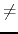
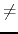

The most recent economic crisis was partly caused by the manner in which banks made loans to people unable to repay them and resold such loans to other banks as debentures. Obviously, when people failed to repay their loans, the whole system collapsed.
The crisis was so deep that it affected countries all over the world, including Nlogonia, where the honored prime minister Man Dashuva ordered the Central Bank chairman to come up with a solution. He came up with a brilliant idea: if all banks could liquidate its debentures only with its own monetary reserves, all banks would survive and the crisis would be averted.
However, with the elevated number of debentures and banks involved, this was an extremely complicated task, so he asked for your help in writing a program that, given the banks and the debentures printed by them, determines if it is possible that all banks pay back their debts using only their monetary reserves and credits.
The input consists of several test cases. The first line of each test case contains two integers B and N, indicating the number of banks (
1 B20) and the number of debentures printed by the banks (
1N20). The banks are identified by integers between 1 and B. The second line contains B integers Ri separated by spaces, indicating the monetary reserves of each one of the B banks (
0Ri104, for
1iB). The N following lines contain each one three integers separated by spaces: an integer D, indicating the debtor bank (
1DB), an integer C , indicating the creditor bank (
1CB and DC) and an integer V, indicating the debenture value (
1V104).
B20) and the number of debentures printed by the banks (
1N20). The banks are identified by integers between 1 and B. The second line contains B integers Ri separated by spaces, indicating the monetary reserves of each one of the B banks (
0Ri104, for
1iB). The N following lines contain each one three integers separated by spaces: an integer D, indicating the debtor bank (
1DB), an integer C , indicating the creditor bank (
1CB and DC) and an integer V, indicating the debenture value (
1V104).
The end of input is indicated by a line containing only two zeros, separated by spaces.
For each test case, your program should print a single line, containing a single character: `S', if it is possible to liquidate all debentures without a bailout from the Central Bank of Nlogonia, or `N' if a bailout is necessary.
3 3
1 1 1
1 2 1
2 3 2
3 1 3
3 3
1 1 1
1 2 1
2 3 2
3 1 4
3 3
1 1 1
1 2 2
2 3 2
3 1 2
0 0
S
N
S